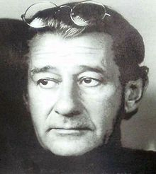

The increasingly oppressive restrictions placed on Jews by the Nuremberg laws meant that his father lost control of the factory in which he manufactured buttons and buckles; he was briefly interned in a concentration camp on Kristallnacht, 9 November 1938, which finally compelled the family to leave Germany. Newton's parents fled to Argentina.[4] He was issued with a passport just after turning 18 and left Germany on 5 December 1938. At Trieste, he boarded the Conte Rosso (along with about 200 others escaping the Nazis), intending to journey to China. After arriving in Singapore, he found he was able to remain there, first briefly as a photographer for the Straits Times and then as a portrait photographer.
